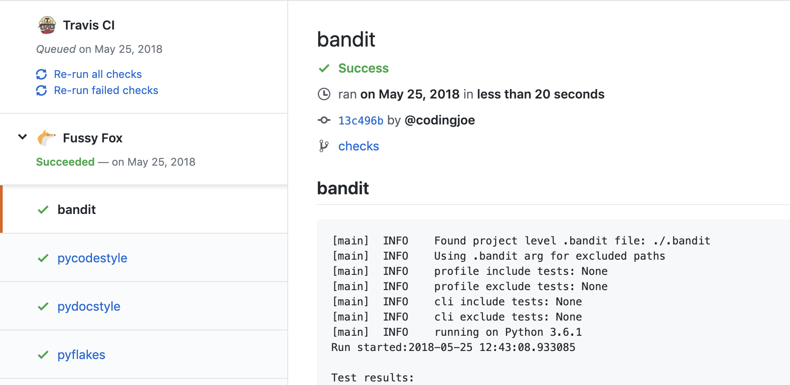

Lambda Lint
Style.
Make your reviews about content and your CI suite about tests.
Let us worry about style 😎
Lambda Lint provides a variety of static code analytic services.
We use AWS Lambda to provide coders with lightning fast feedback on each commit.
Sample:

Linters.
We will continue to make more and more linters available in the cloud, this is what we got so far:
| Python |
| PyCodeStyle |
checks PEP8 compliance |
Install
|
| PyDocStyle |
validates docstrings for PEP257 compliance |
Install
|
| Pyflakes |
detects code errors in Python code |
Install
|
| bandit |
must have code security linter |
Install
|
| JavaScript |
| StandardJS |
JavaScript Standard Style code linter |
Install
|
Love.
We are happy to add more tools, feel free to suggest some over here.